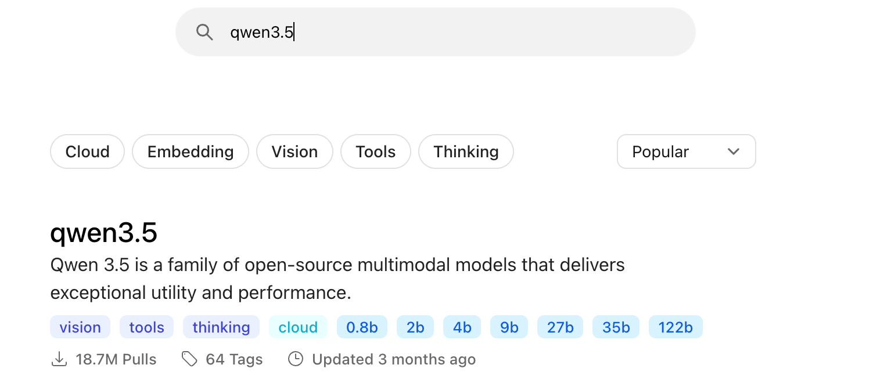
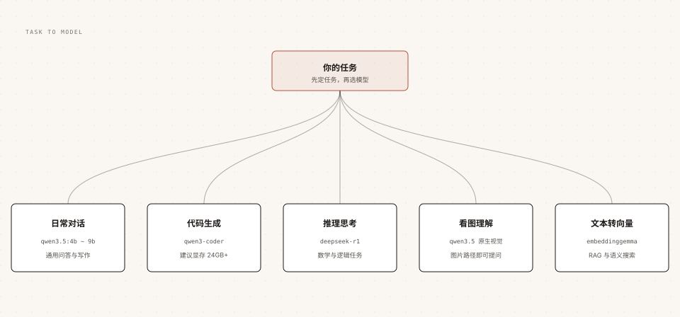

Ollama モデルライブラリとモデル選択
この章では、Ollama モデルライブラリの読み方、主要モデルファミリーの位置づけ、量子化精度のトレードオフを横断的に整理し、最終的にタスク別の実用的なモデル選定方法を提供します。
モデルを正しく選べば、パフォーマンス問題の半分は存在しなくなります。
モデルライブラリの読み方：能力タグ体系
Ollama モデルライブラリ（ollama.com/search）はタグ体系で各モデルの能力を表しています。モデル選定の最初のステップはタグによるフィルタリングです。

| タグ | 意味 | 典型的な用途 |
|---|---|---|
| vision | 画像入力に対応 | 画像のQ&A、スクリーンショット理解、文書認識 |
| tools | ツール呼び出しに対応 | エージェント、関数呼び出し、自動化 |
| thinking | 思考モードに対応 | 数学、論理、複雑な推論 |
| embedding | テキストをベクトル化 | RAG、意味検索、ナレッジベース |
| cloud | クラウド実行、ローカル計算能力不要 | ローカル構成が不足している場合に大規模モデルを呼び出し |
本チュートリアルの qwen3.5 を例にとると、モデルライブラリで vision、tools、thinking のタグを同時に持っており、「オールラウンダー」タイプです。これが本書全体でテストモデルに選ばれた理由でもあります。
各モデルページには、全タグ（tag）、ダウンロードサイズ、コンテキストウィンドウ、入力タイプ、更新時間も一覧表示されます。ダウンロード前に1分間読むだけで、多くの試行錯誤の時間を節約できます。
主要モデルファミリー一覧
Ollama はモデルではなく、各社のオープンソースモデルを実行するプラットフォームです。以下は現在最も一般的ないくつかのファミリーです：
| ファミリー | 開発元 | 位置づけ・特徴 | 適したシーン |
|---|---|---|---|
| Qwen（通義千問） | Alibaba | サイズ展開が豊富で、中国語能力が強く、マルチモーダルとツール呼び出しが完備 | 中国語タスク、汎用開発、本チュートリアルの例 |
| DeepSeek | DeepSeek（深度求索） | 推論シリーズ（R1）は思考チェーンに優れる | 数学、論理、深い推論が必要なタスク |
| Gemma | 軽量サイズで優れた性能、マルチモーダル | 低スペックデバイス、軽量タスク | |
| Llama | Meta | エコシステムが最も広く、コミュニティ資料が多い | 汎用タスク、英語シーン |
| GPT-OSS | OpenAI | OpenAI のオープンソースシリーズ、思考レベルに対応 | 汎用タスク、エージェント実験 |
| Mistral | Mistral AI | 欧州勢の代表、小規模モデルの効率が高い | 軽量デプロイ、多言語 |
モデルの反復速度は週単位で、具体的に利用可能な規格と能力はモデルライブラリのリアルタイムページが基準です。具体的な結論よりも選定の考え方の方が長く使えます。まずタスクと能力タグを決め、次に規格とハードウェアのマッチングを検討します。
量子化精度：サイズと品質のトレードオフ
量子化はモデルの重みを高精度の小数から低ビット幅のストレージに圧縮する技術であり、「大規模モデルを小GPUで動かす」ための鍵です。
同一モデルの異なる量子化バージョンでは、サイズと品質の関係はおおよそ次のようになります。
| 精度 | 相対サイズ | 品質の性能 | 適用シーン |
|---|---|---|---|
| fp16 / fp32 | ベンチマーク（最大） | 無損失 | トレーニング・量子化前のオリジナルの重み |
| q8_0 | 約 1/2 | ほぼ無損失 | VRAMに余裕がある場合の推奨 |
| q4_K_M | 約 1/4 | 性能は若干低下するが、コストパフォーマンスが最も高い | 大多数のローカルデプロイの選択肢 |
| q4_K_S | q4_K_M よりわずかに小さい | q4_K_M よりさらに低い | VRAMを極限まで使い切る |
モデルライブラリのモデルはデフォルトで量子化済み（一般的には q4_K_M）であり、ダウンロードしてすぐ使えるため、自分で気にする必要はありません。
ローカルモデルの実際の精度を確認したい場合、show 系インターフェースまたは API で量子化レベルを確認できます。自分で fp16 モデルを小さく圧縮したい場合は、create コマンドの quantize パラメータを使用します。次の Modelfile の章で完全なデモがあります。
タスク別のモデル選定
「モデル選定」を分類問題に変えます。まずタスクを決め、次に推奨と照合します。

| タスク | 推奨モデル | ハードウェア参考 | 備考 |
|---|---|---|---|
| 日常会話、文章作成 | qwen3.5:4b ~ 9b | 16GBメモリで動作可能 | コストパフォーマンス最優先、能力タグが充実 |
| コード生成 | qwen3-coder | 24GB以上のVRAMを推奨 | コーディングツールと組み合わせる場合は64Kコンテキストが必要 |
| 数学、論理推論 | deepseek-r1 / qwen3.5 思考モード | サイズに応じた標準構成 | think を有効にすると安定するが遅くなる |
| 画像、スクリーンショットの理解 | qwen3.5（ネイティブビジョン） | 対話の規格と同じ | コマンドラインで画像パスを直接渡す |
| RAG、意味検索 | embeddinggemma / qwen3-embedding | サイズが小さく、要件が低い | 埋め込みモデルはチャットに使用できない |
埋め込み（embedding）モデルと生成モデルは別物です。前者はテキストをベクトルに変換するだけで、検索や類似度計算に使われ、文字による回答は出力しません。ナレッジベースを構築する際は両方必要ですので、混同しないようにしてください。
サイズとハードウェアのマッチング
丸暗記よりも除外法が便利です。まず大まかなルールで「動くかどうか」を判断し、その後に微調整します。
大まかなルール：モデルのダウンロードサイズは最小メモリ/VRAM要件にほぼ等しく、実際の実行時にはさらに1〜2GBのオーバーヘッドを確保し、コンテキストウィンドウが大きいほど追加分も増えます。
| 利用可能なメモリ / VRAM | 実行可能な規格の上限 | 推奨 |
|---|---|---|
| 8GB | qwen3.5:0.8b ~ 2b | 体験重視、能力の上限を受け入れる |
| 16GB | qwen3.5:4b ~ 9b | 日常利用のスイートスポット |
| 8GB VRAM（独立GPU） | qwen3.5:9b | 100% GPU を維持して初めて速度が出る |
| 24GB VRAM | qwen3.5:27b / qwen3-coder | 上級開発とコードタスク |
| 48GB VRAM以上 | 35b+ とマルチGPU構成 | デフォルトのコンテキストも自動的に増える |
起動したら、次を使用してollama ps検証：PROCESSOR 列に 100% GPU と表示されればすべてVRAMに入ったことを意味し、CPU/GPU の混合比率が表示されればVRAM不足で分割されていることを意味します。速度が明らかに低下するため、無理に続けずにより小さい規格に変更すべきです。
Cloud モデルと退役メカニズム
ローカルの計算能力が足りないが超大規模モデルを使いたい場合、Ollama は第三の道を提供しています。それが cloud タグのクラウドモデルです。
例
ollama signin
# ローカルモデルと同じようにクラウドモデルを実行、重みのダウンロードは不要
ollama run qwen3.5:cloud
クラウドモデルの使用方法はローカルモデルと完全に同じで、同じコマンド、同じ API、同じツール統合です。ただ、推論が Ollama のサーバー上で行われる点だけが異なります。
クラウドモデルには退役メカニズムがある点に注意が必要です。公式は定期的に旧モデルを終了し、推奨の代替を提示します。メールと公式サイトのお知らせで通知されるため、特定のクラウドモデルに依存する自動化プロセスはこうした通知に注意してください。
その他の拡張ローカルモデルは退役メカニズムの影響を一切受けません。ディスクにダウンロードした重みは永久に使用でき、これが純粋なローカルソリューションがチームに最も安心感を与える特性です。